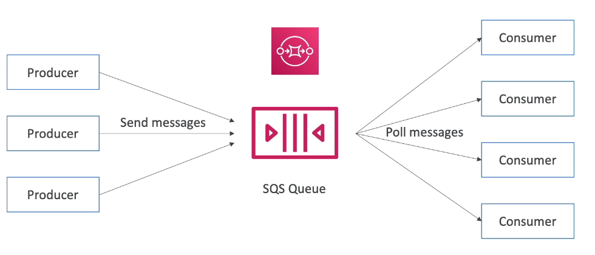
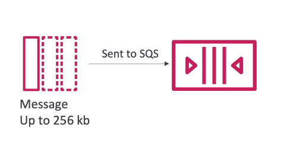
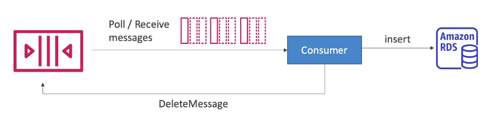
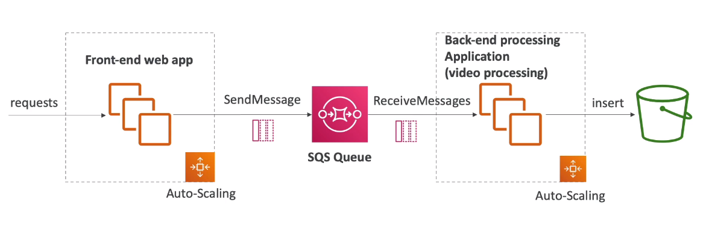
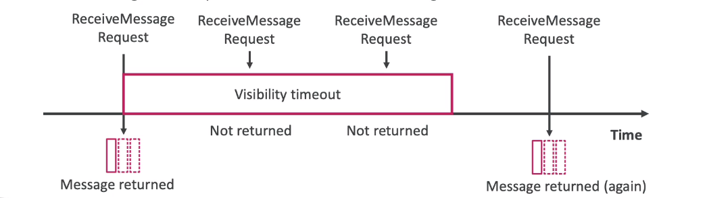
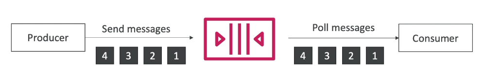
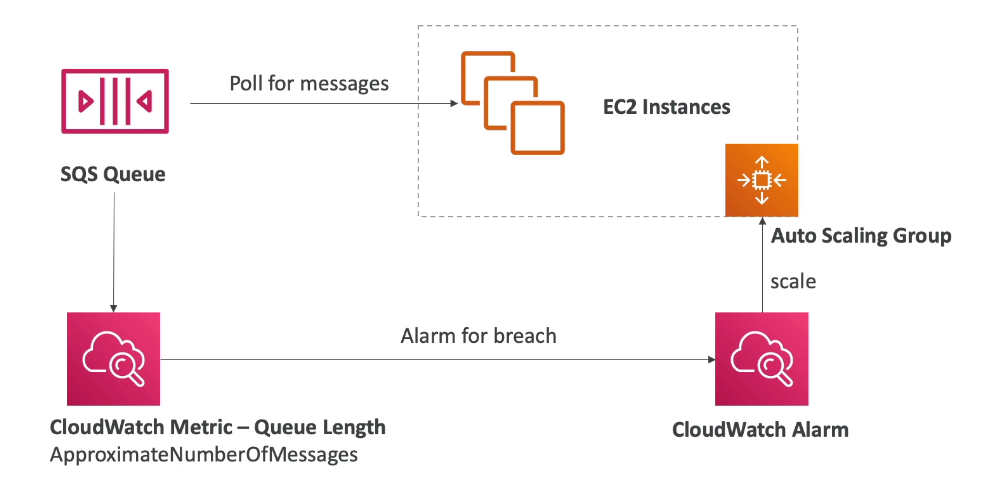
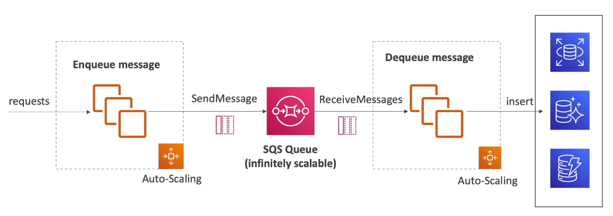

🌿 What?

- Là dịch vụ lâu đời nhất của AWS - hơn 10 năm.
- Dịch vụ lưu trữ messages, sử dụng để tách biệt các ứng dụng của chúng ta.
- Attrubutes:
- Không giới hạn thông lượng, không giới hạn số lượng messages trong queue.
- Mặc định tin nhắn sẽ được giữ lại trong 4 ngày, lâu nhất là 14 ngày.
- Độ trễ thấp
- Mỗi message chỉ được gửi tối đa 265Kb.
- Có thể sẽ nhận được tin nhắn bị duplicate
- Có thể có order messages.
🌿 Producing Messages

- Gửi messages đến Queue(use SendMessage API)
- Messages tồn tại trong Queue đến khi Consumer xóa
- Mặc định giữ lại 4 ngày, nhiều nhất là 14 ngày.
🌿 Consuming Messages

- Nhận Messages từ Queue(nhận được 10 messages một lần)
- Consumers có thể là EC2 Instance, AWS Lambda, hay server on-premises, …
- Khi nhận message sẽ tiếp tục xử lý(ở code của chúng ta)
- Sau khi nhận xong thì sẽ gọi API xóa message trong Queue(DeleteMessage API)
🌿 Kiến trúc phổ biến

- Hiểu đơn giản SQS là một nơi lưu trữ các job để xử lý bất đồng bộ cho hệ thống của chúng ta.
- Ví dụ, hệ thống cần chỉnh sửa video, nhưng tác vụ chỉnh sửa sẽ mất thời gian ở phía backend, để tăng trải nghiệm của người dùng, chúng ta chuyển tác vụ chỉnh sửa vào Queue để chạy bất đồng bộ, người dùng có thể tiếp tục thao tác mà không cần phải ngồi đợi chỉnh sửa video xong.
- Hoàn toàn tách biệt các tầng của hệ thống
- Tầng Front-End
- Tầng Back-End
- Tầng Database
- Kết hợp với Auto-Scaling để tự động mở rộng đáp ứng với nhu cầu sử dụng của Queue.
🌿 Security
- Encryption:
- In-flight encryption using - HTTPS API
- Mã hóa phần còn lại với KMS Keys
- Client-side encryption nếu clients muốn tự thực hiện mã hóa/giải mã.
- Access Controls: IAM policies
- SQS Access Policies:(giống cái S3 bucket polices)
- Hữu ích khi muốn truy cập chéo account
- Hữu ích khi cho phép những services khác(SNS, S3, …) được quyền ghi.
🌿 Message visibility timeout

- Là khoảng thời gian cooldown sau khi có một consumer nhận được message, các consumers khác không thể nhận được message. Cái này sẽ tránh việc 2 consumers nhận 1 message và thực hiện logic.
- Mặc định, timeout là 30s
- Hết thời gian timeout, các consumers khác sẽ có thể nhận được messages, nếu trong thời gian đó nó chưa được xóa.
- Nhưng trên thực tế, có thể consumer sẽ cần nhiều hơn 30s để thực hiện logic với message. Để cần thêm thời gian timeout, consumer có thể call ChangeMessageVisibility API.
- Lưu ý không nên set timeout quá dài hoặc ngắn vì:
- Nếu thời gian timeout quá dài(hàng giờ liền), consumer nhận message bị crashes vì một lý do nào đó, hệ thống sẽ phải đợi hàng để message visible trở lại để một consumer khác có thể nhận và thực hiện logic với nó.
- Nếu thời gian timeout quá ngắn, consumer chưa xử lý xong mà đã hiển thị để một consumer khác nhận được message, hệ thống có thể sẽ thực hiện logic 2 lần trên cùng một message.
🌿 Long Polling
- Khi một consumer requests message từ Queue, nó có thể lựa chọn là đợi (chứ không ngắt poll luôn) khi Queue đang trống.
- LongPolling giảm số lượng API gọi đến SQS, tăng hiệu quả và giảm độ trễ(nhận được message ngay khi nó được đẩy vào Queue).
- Thời gian đợi có thể được set từ 1s -> 20s.
- Long Polling sẽ được khuyến khích sử dụng hơn Short Polling
- Long polling có thể được enabled trong Queue hoặc có thể sử dụng API WatiTimeSeconds để set thời gian đợi.
🌿 FIFO Queue

- FIFO = FIrst In First Out
- Giới hạn thông lượng: 300 message/s
- Tránh việc gửi duplicate
- Các messages được thực thi theo đúng thứ tự.
- Chỉ có nhận một consumer.
🍃 Ordering data
- Vì chỉ nhận một consumer -> hiệu suất kém -> muốn scale lên nhiều consumers -> sử dụng Group ID
- Các messages vẫn được gửi theo thứ tự FIFO, những mỗi message sẽ được gắn với một group. Từ đó có thể tạo ra nhiều consumers, mỗi consumer sẽ poll messages ứng với mỗi group.

🌿 Integrate with Auto Scaling Group

- Sử dụng cái CloudWach Metric để theo dõi số lượng messages trong Queue
- Nếu nhiều hơn 100 chẳng hạn(server không xử lý kịp), cái CloudWatch Alarm sẽ báo cho ASG để thực hiện mở rộng, đáp ứng khả năng xử lý messages trong Queue, tương tự khi scale down.
🌿 Kiến trúc sử dụng Queue làm buffer khi ghi dữ liệu lớn vào database

- Ví dụ chúng ta có một trang thương mại điện tử và vào đợt sale, mọi người mua hàng rất rất nhiều. Nếu để server ghi trực tiếp dữ liệu vào databases, khả năng cao database sẽ bị quá tải và sẽ bị mất một số giao dịch của người dùng.
- Giải pháp cho vấn đề này là sử dụng SQS, như vậy thì tất cả giao dịch của người dùng sẽ nằm trong Queue, một server khác sẽ có trách nhiệm nhận lại messages và thực hiện ghi dữ liệu dần dần vào databases.